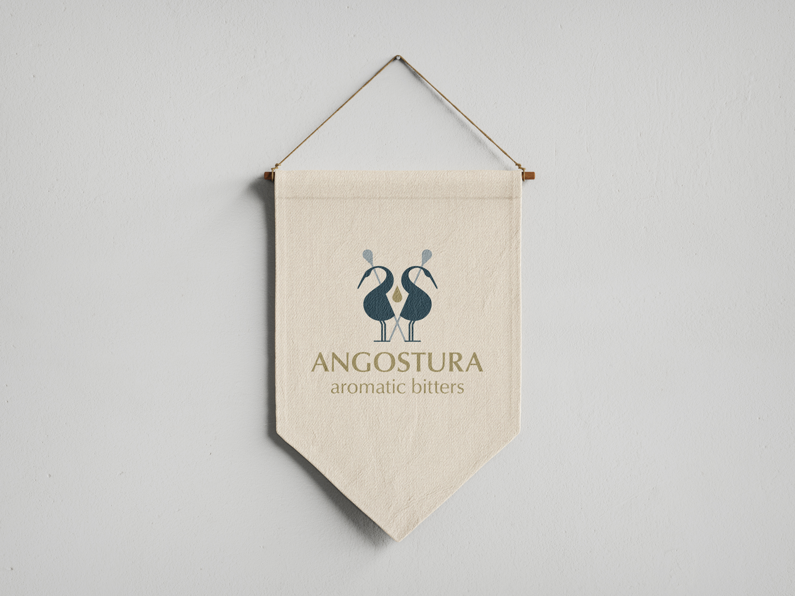

The Challenge
The challenge for this logo redesign was to blend the history and prestige of the company with a modernized twist—to create a mark that would be timeless, simple and recognizable
The Solution
Through the creative process I was able to design a logo that incorporated all the necessary themes in order to produce a timeless, yet modernized redesign sprinkled with cultural significance that elevates the company's brand.
Research
In my research, I was able understand the vivid history of Angostura Bitters and how it came it be. While learning about the company and the product, I also looked into cultural clues from both Trinidad and Tobago, as well as cocktail culture to help tell the bigger story.

Sketching
Taking my research and narrowing down important themes to explore, was key to guiding my sketching. From there, I explored down many paths that could express these themes until I settled on three concepts that were strong enough to move forward with.
Digitizing
The next step was bringing my concepts into Illustrator and vectorizing them. Here I was able to perfect the concepts and explore different typefaces that would bring the logo together.
Iterations
The next process was deciding the final concept between three complete works.
The Final
Through the creative process I was able to design a logo that incorporated all the necessary themes in order to produce a timeless, yet modernized redesign sprinkled with cultural significance that elevates the company's brand.